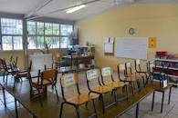

Anterior: Inicio: Siguiente:
Final:Mi formación escolar empieza
en el Kinder, dede empece a asistir desde los 3 años en lel
Kinder Juarez Masa en el turno de la tarde, posteriormente me cambiaron
al Kinder Adolfo Ruiz Cortines en el turno Matutino en el cual asisti
los dos años restantes, para el tercer y ultimo año me
saleccionaron como integrante de la escolta como comandante.
Tambien participe en olimpiadas del conocimiento donde de igual manera gane el primer lugar a nivel Delegacional y tuve mi reconocimiento, en los 6 años de primaria siempre obtuve dipllomas de primer lugar con buenos promedios de 9.9 y 9.8, para sexto de prmaria fue nuevamente seleccionada como integrante de la escolta siendo la comandante, participando en competencias de escoltas con otras escuela las cuales ganamos respectivamente representando mi escuela y mi delegacion la cual es Coyoacan.

Posteriormente hice mi examen para la secundaria en el cual no asisti a ningun curso y de 60 aciertos saque un total de 58 los cuales me permitieron quedarme en mi primera opcion la cual era la escuela Diurna José Enrique Rodó #139, asistiendo ahi mis 3 años de secundaria donde los 3 respectivos años obtuve reconocimeintos por mi buen comportamiento y buenos promedios que yo tenia, el primer ñao de segundaria fue cuando ocurrio el terremoto de 2017 donde mi escuela resulto gravemente dañada y para tomas clases eran en linea, para segundo grado nos hiceron aulas provivionales en el patio de otra secundaria el cual nos presto sus espacios, para tercer grado ya habian concluido mi escuela, pero viene la pandemia y volvimos a tmonar clases en linera, en el tiempo de segundo a tercero fui seleccionada nuevamente para ser integrante de la esolta como comandante nuevamente, el cual acepte gustosa, no lo concluimos muy bien la secundiaria debido a las condiciones de la pandemia pero termine la secundaria con promedio de 9.8.

Para la prepa hice el examen comipems, para el cual no asisti a curso y de 128 acieros obtuve un total 98 respuestas buenas las cuales me dieron mi lugar en mi tercera opcion el cual es el CECyT 5 benito juares en el cual asisito o estoy inscrita actualmente. Mi primer y segundo semestre debido a las condiciones se me ha compliacado un poco pero he salido con buenas calificaciones en mis materias.

Despues toco irme a la premiaria donde la escuela Prof. Ramón
Durand, fue donde inicie y termine mi primaria con exito, siendo dede
primero una aluma destacada, teniendo promedio de 9.9, responsable,
aplicada y complida lo cual me abrio muchas puertas como el particpar
en un concurso de poemas en ingles deonde gane el primer lugar en toda
mi escuela, me fui a nivel zona a la cual pertenecia mi escuela y quede
en segundo lo cual ya no me permitio pasar a la otra fase.Tambien participe en olimpiadas del conocimiento donde de igual manera gane el primer lugar a nivel Delegacional y tuve mi reconocimiento, en los 6 años de primaria siempre obtuve dipllomas de primer lugar con buenos promedios de 9.9 y 9.8, para sexto de prmaria fue nuevamente seleccionada como integrante de la escolta siendo la comandante, participando en competencias de escoltas con otras escuela las cuales ganamos respectivamente representando mi escuela y mi delegacion la cual es Coyoacan.
Posteriormente hice mi examen para la secundaria en el cual no asisti a ningun curso y de 60 aciertos saque un total de 58 los cuales me permitieron quedarme en mi primera opcion la cual era la escuela Diurna José Enrique Rodó #139, asistiendo ahi mis 3 años de secundaria donde los 3 respectivos años obtuve reconocimeintos por mi buen comportamiento y buenos promedios que yo tenia, el primer ñao de segundaria fue cuando ocurrio el terremoto de 2017 donde mi escuela resulto gravemente dañada y para tomas clases eran en linea, para segundo grado nos hiceron aulas provivionales en el patio de otra secundaria el cual nos presto sus espacios, para tercer grado ya habian concluido mi escuela, pero viene la pandemia y volvimos a tmonar clases en linera, en el tiempo de segundo a tercero fui seleccionada nuevamente para ser integrante de la esolta como comandante nuevamente, el cual acepte gustosa, no lo concluimos muy bien la secundiaria debido a las condiciones de la pandemia pero termine la secundaria con promedio de 9.8.
Para la prepa hice el examen comipems, para el cual no asisti a curso y de 128 acieros obtuve un total 98 respuestas buenas las cuales me dieron mi lugar en mi tercera opcion el cual es el CECyT 5 benito juares en el cual asisito o estoy inscrita actualmente. Mi primer y segundo semestre debido a las condiciones se me ha compliacado un poco pero he salido con buenas calificaciones en mis materias.